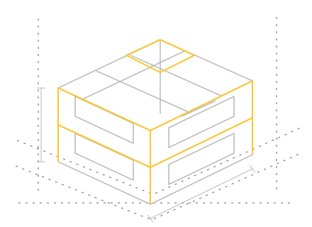

Consultoría
Evaluación técnica, estudios de factibilidad y acompañamiento para planificar tu proyecto.
Ver especialidadArquitectura · Ingeniería · Construcción
Del primer plano a las decisiones de obra. Te acompañamos con diseño, consultoría y soluciones técnicas para construir.
Consultar mi proyectoTacna, Perú Arquitectura e ingeniería desde 2011
 Espacios para habitar. Diseño para vivir.
Espacios para habitar. Diseño para vivir.
Arkyproyectos SAC · Desde 2011
Somos una empresa de arquitectura, construcción y consultoría de obras civiles en Tacna. Reunimos distintas especialidades para acompañarte en la planificación y el desarrollo de tu proyecto.
Conoce nuestro enfoqueNuestras especialidades
Evaluación técnica, estudios de factibilidad y acompañamiento para planificar tu proyecto.
Ver especialidadAnteproyectos, planos y diseño residencial o comercial, desde la idea hasta el expediente.
Ver especialidadCálculo y diseño sismorresistente para viviendas, comercios y otras edificaciones.
Ver especialidadMediciones, curvas de nivel y replanteos para tomar decisiones con información precisa.
Ver especialidadImpresión, ploteo y digitalización de documentos técnicos en distintos formatos.
Ver especialidadConsulta la disponibilidad de equipos de topografía e implementos para construcción.
Ver especialidadLa técnica también se ve
Planificar cada detalle.
Entender cómo se construye.

Distribución, medidas y detalles para dar forma a una idea.

Arquitectura e ingeniería pensadas como un conjunto.
Imágenes ilustrativas de las especialidades.
Empecemos por tu idea
Comparte qué necesitas, dónde se ubica y en qué etapa se encuentra.
Conversemos sobre las especialidades, la información y los entregables que requiere.
Solicita una propuesta con el alcance, las condiciones y los plazos que correspondan.

Antes de empezar
Si necesitas revisar un caso particular, conversemos.
Hacer una consulta ↗En Mza. C Lote 10, Asc. 1 de Mayo, Tacna, Perú. En Contacto encontrarás el mapa y nuestros horarios.
Describe el tipo de proyecto, su ubicación y lo que necesitas resolver. Indica si ya cuentas con planos o información del terreno.
Sí. Puedes consultar por arquitectura, estructuras, topografía u otro de nuestros servicios según la etapa de tu proyecto.
Escríbenos por WhatsApp o correo con los datos de tu proyecto para conversar sobre el alcance y solicitar una propuesta.
El formulario prepara un mensaje para continuar en WhatsApp. También puedes elegir abrir tu aplicación de correo.
Sí. Para ploteos, indica el formato y la cantidad. Para equipos, consulta disponibilidad y condiciones de alquiler.
Tu próximo paso
Conversemos sobre el alcance y las necesidades de tu proyecto.